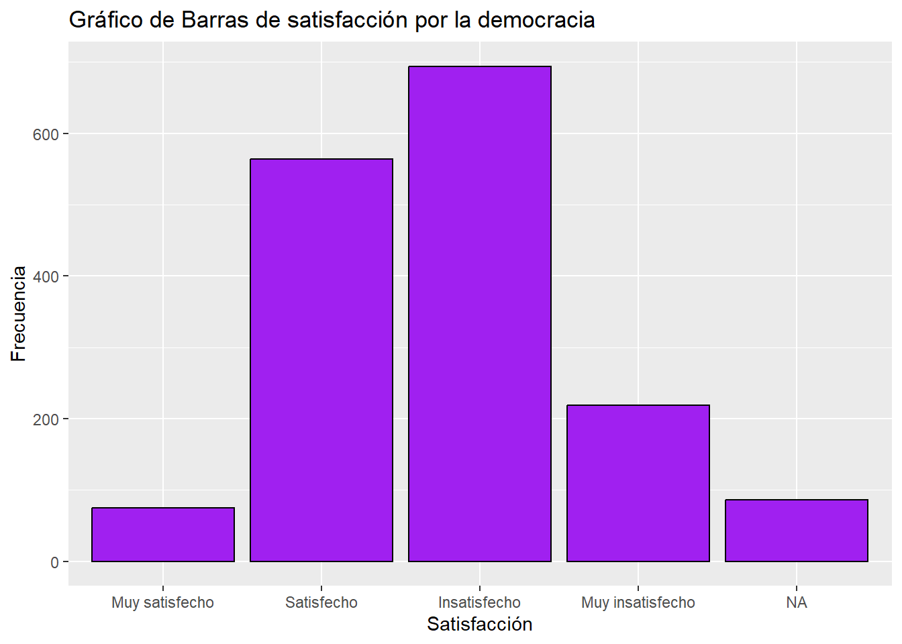
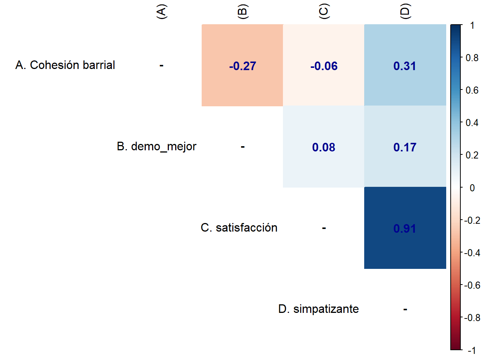

El avance de la derecha chilena y su amenaza a la percepción de la democracia
La derecha chilena ha experimentado una evolución significativa desde la dictadura militar de 1973, para esto tuvo que sufrir una adaptación pragmatica y así mantenerse vigente en la politica contemporanea actual:
“Frente a ciertos temas la derecha chilena ha mostrado una capacidad de acomodación ideológica importante, de manera que si bien no resulta insensato postular que ha experimentado un gradual proceso de transformación programática, esto no implica que la derecha esté dispuesta a transar los pilares del modelo neoliberal” Rovira Kaltwasser (2019) Un ejemplo de ello es su voluntad a ser parte de los dos procesos constitucionales en el país, tanto en el año 2019 como el pasado 2022.
Una referencia del ascenso de la derecha, es que a nivel regional podemos visualizar a José Antonio Kast en Chile, en 2017, y la elección como presidente de Jair Bolsonaro en 2018, en Brasil Mudde (2019) así consideramos a Chile y Brasil como países donde el discurso populista de derecha ha ido emergiendo: “Aunque también están comenzando a surgir candidatos de derecha en otros países latinoamericanos, los casos de Brasil y Chile presentan los ejemplos más claros de una derecha radical populista en la región” @(aún)la2021 Cabe aclarar que “el populismo generalmente se identifica con las derechas, porque alude a las formaciones de extrema derecha” Climent-Sanjuan and Montaner-Goetzenberger (2020)
Volviendo a la dictadura militar de 1973 que vivió Chile, este fue liderado por el general Augusto Pinochet. La dictadura militar que se instaló a partir de entonces se caracterizó por un modelo autoritario, inspirado en las doctrinas económicas neoliberales y en los principios de la extrema derecha, tales como el anticomunismo, la prohibición de los partidos políticos, la violación de los derechos humanos:
“La violación sistemática de los derechos humanos se llevó a cabo a través de los órganos estatales ya existentes (Fuerzas Armadas, Carabineros de Chile, Policía de Investigaciones), mientras que otros fueron creados especialmente para tal efecto, como fue el caso de la Dirección de Inteligencia Nacional (DINA, 1974-1977), Comando Conjunto (1975-1977) y Central Nacional de Informaciones (CNI, 1977-1990, sucesora de la DINA)” “Violación a Los Derechos Humanos” (n.d.)
La transición abrupta de la Unidad Popular a la dictadura militar, no solo marcó un quiebre en la estructura política del país, sino que también proporcionó una polarización en la sociedad chilena, no solo en el sistema partidario, sino que también en la ciudadanía chilena.
Hipótesis Central:
Se espera que existe una relación a medida que la derecha y simpatizantes vayan aumentando, la percepción sobre la democracia se vea afectada de manera negativa.
Relevancia del problema:
Este tema es importante de investigar ya que de confirmar la hipótesis se logra identificar una creciente amenaza a la democracia, con ella las instituciones democráticas y su estabilidad.
Por otro lado, como país se corre el peligro de retroceder en el tiempo y volver a expresiones dictatoriales de poder: “Los líderes populistas frecuentemente promueven políticas que socavan los derechos de los grupos minoritarios, lo que refleja un aspecto fundamental de la ideología populista que retrata a ’el pueblo como homogéneo y excluye a aquellos que no encajan en esta estrecha definición.” Weyland (2001)
A su vez, puede traer consigo consecuencias económicas negativas y pone en riesgo la gobernanza efectiva, ya que se debilita la capacidad del gobierno para abordar desafíos al dar soluciones de carácter simplista a problemas complejos. “Los líderes populistas a menudo socavan la gobernanza eficaz al atacar a instituciones independientes, incluidos los medios de comunicación, el poder judicial y las organizaciones de la sociedad civil, que son esenciales para mantener la transparencia y la rendición de cuentas democráticas.” Aalberg (2017)
Análisis de datos
Para el análisis de datos del presente trabajo, utilizaremos la base de datos de Proyecto de Opinión Pública de América Latina (LAPOP, por sus siglas en inglés) correspondiente al año 2018.
Variables a utilizar:
Preferencia a la democracia ante cualquier otro régimen político (Variable dependiente)
Identificación política y satisfacción de democracia (Variable independiente)
¿Qué se busca?
Como la identificación política y la satisfacción de democracia influyen en la preferencia a la democracia ante cualquier otro régimen político. Comprobar si existe y cómo la identificación política de una persona y su nivel de satisfacción con la democracia pueden influir en su preferencia por la democracia sobre otros regímenes políticos
Installing package into 'C:/Users/beth8/AppData/Local/R/win-library/4.3'
(as 'lib' is unspecified)
package 'pacman' successfully unpacked and MD5 sums checked
The downloaded binary packages are in
C:\Users\beth8\AppData\Local\Temp\RtmpiSsMwU\downloaded_packages
x <categorical>
# total N=1638 valid N=1552 mean=2.68 sd=0.77
Value | N | Raw % | Valid % | Cum. %
-------------------------------------------------
Muy satisfecho | 75 | 4.58 | 4.83 | 4.83
Satisfecho | 564 | 34.43 | 36.34 | 41.17
Insatisfecho | 694 | 42.37 | 44.72 | 85.89
Muy insatisfecho | 219 | 13.37 | 14.11 | 100.00
<NA> | 86 | 5.25 | <NA> | <NA>
proc_data$demo_mejor <- dplyr::recode(proc_data$demo_mejor, "1"="Muy en desacuerdo","2"="Medianamente en desacuerdo","3"="Desacuerdo","4"="Ni de acuerdo ni en desacuerdo","5"="De acuerdo","6"="Medianamente de acuerdo","7"="Muy de acuerdo")frq(proc_data$demo_mejor)
x <categorical>
# total N=1638 valid N=1550 mean=5.04 sd=1.61
Value | N | Raw % | Valid % | Cum. %
------------------------------------------------------------------------------------------------------------
Muy en
desacuerdo | 64 | 3.91 | 4.13 | 4.13
Medianamente
en desacuerdo | 42 | 2.56 | 2.71 | 6.84
Desacuerdo | 119 | 7.26 | 7.68 | 14.52
Ni de acuerdo
ni en desacuerdo | 335 | 20.45 | 21.61 | 36.13
De acuerdo | 363 | 22.16 | 23.42 | 59.55
Medianamente
de acuerdo | 234 | 14.29 | 15.10 | 74.65
Muy de acuerdo | 393 | 23.99 | 25.35 | 100.00
<NA> | 88 | 5.37 | <NA> | <NA>
Installing package into 'C:/Users/beth8/AppData/Local/R/win-library/4.3'
(as 'lib' is unspecified)
package 'sjPlot' successfully unpacked and MD5 sums checked
The downloaded binary packages are in
C:\Users\beth8\AppData\Local\Temp\RtmpiSsMwU\downloaded_packages
La tabla de frecuencia nos indica que el Partido Socialista (PS) es el que cuenta con más simpatizantes en el grupo encuestado teniendo 28 simpatizantes , sin embargo, Renovación Nacional (RN) lo sigue con 27 simpatizantes. Esto podría indicar una polarización (izquiersa/derecha) en el grupo de personas encuestado.
Nivel de satisfacción por la democracia
ggplot(proc_data, aes(x = satisfacción)) +geom_bar(fill ="purple", color ="black") +labs(title ="Gráfico de Barras de satisfacción por la democracia",x ="Satisfacción",y ="Frecuencia")

La tabla nos indica que hay una fuerte sentimiento de insatisfacción respecto a la democracia en el país, ya que se evidencia el nivel de preferencia más alto es “insatisfecho” siendo tambien el más frecuente, seguido por “satisfecho” no existiendo una diferencia muy abrumante.
Preferencia a la democracia
ggplot(proc_data, aes(x = demo_mejor)) +geom_bar(fill ="blue", color ="black") +labs(title ="Gráfico de Barras de Preferencia a la Democracia",x ="Preferencia a la Democracia",y ="Frecuencia")
La tabla nos indica que hay una fuerte inclinación hacia la democracia, ya que el nivel de preferencia más alto “muy de acuerdo” es también el más frecuente, es decir, la mayoría de las personas encuestadas prefieren un sistema democrático.
Installing package into 'C:/Users/beth8/AppData/Local/R/win-library/4.3'
(as 'lib' is unspecified)
package 'texreg' successfully unpacked and MD5 sums checked
The downloaded binary packages are in
C:\Users\beth8\AppData\Local\Temp\RtmpiSsMwU\downloaded_packages
library(texreg)
Version: 1.39.3
Date: 2023-11-09
Author: Philip Leifeld (University of Essex)
Consider submitting praise using the praise or praise_interactive functions.
Please cite the JSS article in your publications -- see citation("texreg").
Attaching package: 'texreg'
The following object is masked from 'package:tidyr':
extract
install.packages("ggpubr")
Installing package into 'C:/Users/beth8/AppData/Local/R/win-library/4.3'
(as 'lib' is unspecified)
package 'ggpubr' successfully unpacked and MD5 sums checked
The downloaded binary packages are in
C:\Users\beth8\AppData\Local\Temp\RtmpiSsMwU\downloaded_packages
library(ggpubr)install.packages("BiocManager")
Installing package into 'C:/Users/beth8/AppData/Local/R/win-library/4.3'
(as 'lib' is unspecified)
package 'BiocManager' successfully unpacked and MD5 sums checked
The downloaded binary packages are in
C:\Users\beth8\AppData\Local\Temp\RtmpiSsMwU\downloaded_packages
library(BiocManager)
Bioconductor version '3.18' is out-of-date; the current release version '3.19'
is available with R version '4.4'; see https://bioconductor.org/install
demo_mejor satisfacción simpatizante
Min. :1.000 Min. :1.000 Min. : 1.000
1st Qu.:5.000 1st Qu.:2.000 1st Qu.: 3.000
Median :6.000 Median :3.000 Median : 5.000
Mean :5.568 Mean :2.699 Mean : 5.384
3rd Qu.:7.000 3rd Qu.:3.000 3rd Qu.: 7.000
Max. :7.000 Max. :4.000 Max. :11.000
alpha_result <-alpha(clean_data)
Number of categories should be increased in order to count frequencies.
Warning in alpha(clean_data): Some items were negatively correlated with the first principal component and probably
should be reversed.
To do this, run the function again with the 'check.keys=TRUE' option
Some items ( demo_mejor ) were negatively correlated with the first principal component and
probably should be reversed.
To do this, run the function again with the 'check.keys=TRUE' option
Warning in sqrt(Vtc): Se han producido NaNs
print(alpha_result)
Reliability analysis
Call: alpha(x = clean_data)
raw_alpha std.alpha G6(smc) average_r S/N ase mean sd median_r
-0.094 -0.3 -0.13 -0.083 -0.23 0.1 4.6 1.2 -0.06
95% confidence boundaries
lower alpha upper
Feldt -0.44 -0.09 0.18
Duhachek -0.30 -0.09 0.11
Reliability if an item is dropped:
raw_alpha std.alpha G6(smc) average_r S/N alpha se var.r med.r
demo_mejor 0.070 0.15 0.083 0.083 0.18 0.067 NA 0.083
satisfacción -0.096 -0.13 -0.060 -0.060 -0.11 0.137 NA -0.060
simpatizante -0.560 -0.75 -0.272 -0.272 -0.43 0.205 NA -0.272
Item statistics
n raw.r std.r r.cor r.drop mean sd
demo_mejor 146 0.31 0.42 NaN -0.118 5.6 1.55
satisfacción 146 0.17 0.51 NaN -0.039 2.7 0.78
simpatizante 146 0.91 0.65 NaN -0.019 5.4 3.38
El histograma tiene una forma asimetrica teniendo la moda alrededor de 10 en la escala de cohesipin barrial, lo que nos indica que existe un grupo significativo de encuestados con una cohesión moderada, por otro lado, las barras se encuentran agrupadas en el rango 5 a 15 principalmente
M <-cor(proc_data, use ="complete.obs") diag(M) =NArownames(M) <-c("A. Cohesión barrial","B. demo_mejor","C. satisfacción","D. simpatizante")colnames(M) <-c("(A)", "(B)","(C)", "(D)")
corrplot::corrplot(M,method ="color", addCoef.col ="#000390", type ="upper", tl.col ="black", na.label ="-")

Interpretaciones:
A y B: La correlación al ser de de -0.27, nos indica una correlación negativa débil, por lo que es correcto decir que a medida que aumenta la cohesión barrial la preferencia por la democracia tiende a disminuir un poco
A y C: La correlación es de -0.07, con un valor tan bajo nos indica que no existe correlación entre las variables cohesión barrial y satisfacción.
A y D: Tienen una correlación postiva debil (0.3) por lo que a medida que aumenta la cohesión barrial, la simpatía politica aumenta de manera ligera
B y C: No hay correlación entre las variables, 0.08 es un valor muy bajo.
B y D: Tienen una correlación positiva muy débil, (0.17)
C y D: Tienen una correlación positiva muy fuerte, a medida que aumenta la satisfacción con la democracia la simpatóa política aumenta significativamente. Su correlación es de 0.91
Regresiones
Regresión lineal simple:
reg2 <-lm(cohesion_barrial ~ demo_mejor, data = proc_data)reg3 <-lm(cohesion_barrial ~ satisfacción, data = proc_data)reg4 <-lm(cohesion_barrial ~ simpatizante, data = proc_data)knitreg(list(reg2, reg3, reg4), custom.model.names =c("Modelo 1","Modelo 2","Modelo 3"),custom.note ="*** p < 0.001; ** p < 0.01; * p < 0.05",custom.coef.names =c("Intercepto", "Demo Mejor","Satisfacción", "Simpatizante"),caption ="Cohesión Barrial",caption.above =TRUE)
Los puntos representan los coeficientes de regresión estimados para cada variable mientras que las lineas representan los intervalos de confianza.
Las tres variables dan como coeficiente 1.00 lo que significa que por cada unidad de incremento de cada variable, la variable dependiente aumentaría 1.00 unidades
Diagramas de dispersión
predicted_values <-predict(reg8, newdata = proc_data)plot(proc_data$demo_mejor, predicted_values, xlab ="Demo Mejor", ylab ="Valores Predichos",main ="Valores Predichos vs. Demo Mejor",pch =16, col ="blue") abline(reg8$coefficients[1], reg8$coefficients[2], col ="red")
Considerando que la línea roja representa un mejor ajuste al modelo de regresión lineal y al observar que los puntos azules no siguen de manera exacta a esta linea, se puede concluir que demo_mejor por si solo no es suficiente para predecir con precisión la variable dependiente del modelo
predicted_values <-predict(reg8, newdata = proc_data)plot(proc_data$satisfacción, predicted_values, xlab ="Satisfacción con la democracia como régimen", ylab ="Valores Predichos",main ="Valores Predichos vs. Satisfacción con la democracia como régimen",pch =16, col ="blue") abline(reg8$coefficients[1], reg8$coefficients[2], col ="red")
Se logra apreciar una tendencia ascendente a medida que aumenta el valor en el eje X, lo que nos indica una correlación positiva entre la satisfacción con la democracia como regimen politico y los valores predichos. Aún así, los puntos azules se encuentran dispersos lo que indica que puede haber una considerable variabilidad en los datos
predicted_values <-predict(reg8, newdata = proc_data)plot(proc_data$simpatizante, predicted_values, xlab ="Simpatizante con partido político", ylab ="Valores Predichos",main ="Valores Predichos vs. Simpatizante con partido político",pch =16, col ="blue") abline(reg8$coefficients[1], reg8$coefficients[2], col ="red")
Se visualiza una tendencia ascendente a medida que aumenta el valor del eje X, esto puede significar una correlación positiva entre ser simpatizante de un partido político y los valores predichos. De igual manera, los puntos azules se encuentran dispersos, lo que puede indicar mucha variabilidad en los datos.
References
Aalberg, Toril, ed. 2017. Populist Political Communication in Europe. Routledge Research in Communication Studies 1. New York, NY: Routledge.
Climent-Sanjuan, Víctor, and Mirian Montaner-Goetzenberger. 2020. “Los Partidos Populistas de Extrema Derecha En España: Un Análisis Sociológico Comparado.”Izquierdas 49: 0–0. https://doi.org/10.4067/S0718-50492020000100248.
Mudde, Cas. 2019. The far right today. Cambridge, GB Medford, MA: Polity.
Rovira Kaltwasser, Cristóbal. 2019. “La (sobre)adaptación programática de la derecha chilena y la irrupción de la derecha populista radical.”Colombia Internacional, no. 99 (July): 29–61. https://doi.org/10.7440/colombiaint99.2019.02.
“Violación a Los Derechos Humanos.” n.d.
Weyland, Kurt. 2001. “Clarifying a Contested Concept: Populism in the Study of Latin American Politics.”Comparative Politics 34 (1): 1. https://doi.org/10.2307/422412.